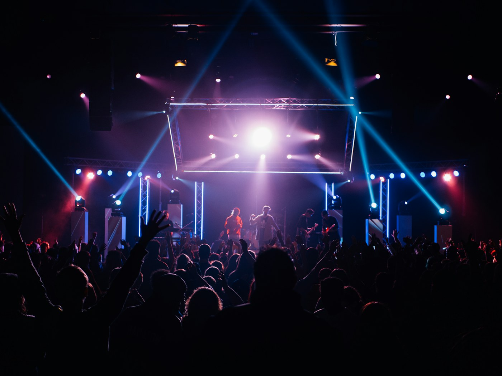
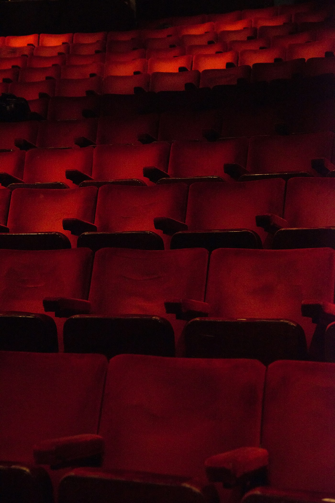
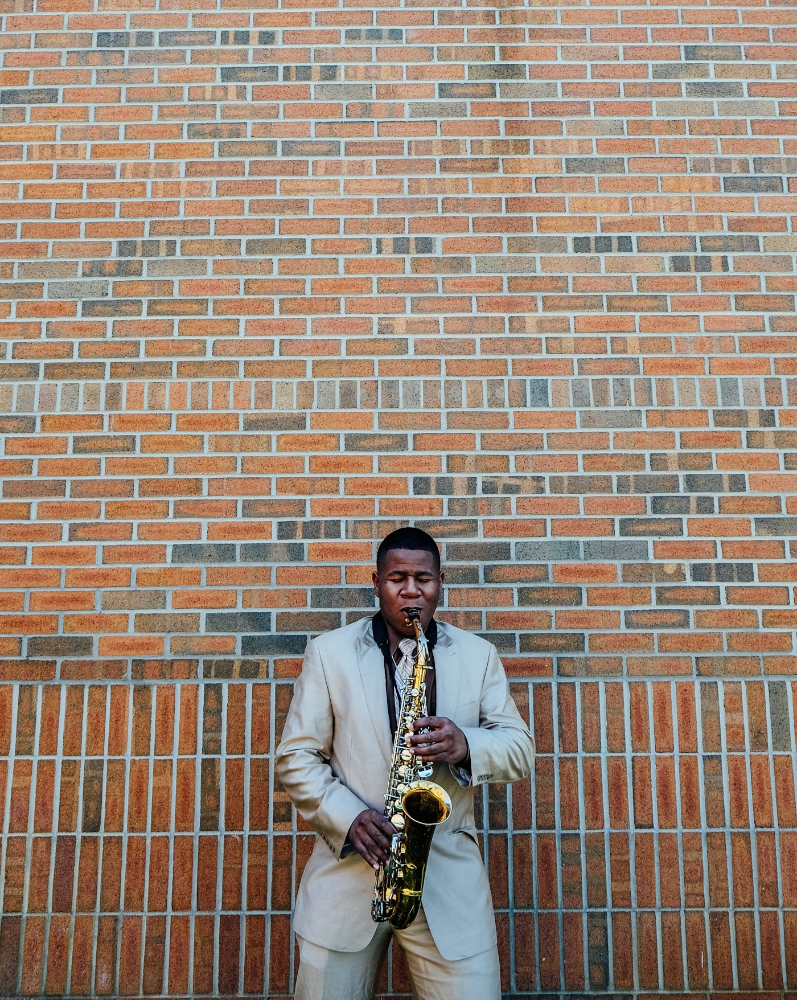

18 SEP
Muzică19:30
Jazz sub stele
Grădina Botanică
350 L

Jazz sub stele. O seară care rămâne cu tine.
Grădina Botanică

20 SEPTeatrul Național

26 SEPArena Chișinău
Artcor
Instrumente locale pentru evenimente live. Datele rămân în acest browser și pot fi resetate oricând.
0/30 instrumente configurateMarchează cât de urgent este ieșirea culturală, astfel încât spectatori să obțină o seară memorabilă.
Alege criteriul decisiv pentru ieșirea culturală, astfel încât spectatori să obțină o seară memorabilă.
Confirmă pregătirea pentru ieșirea culturală, astfel încât spectatori să obțină o seară memorabilă.
Fixează limita acceptată pentru ieșirea culturală, astfel încât spectatori să obțină o seară memorabilă.
Păstrează detaliul esențial despre ieșirea culturală, astfel încât spectatori să obțină o seară memorabilă.
Evaluează încrederea în ieșirea culturală, astfel încât spectatori să obțină o seară memorabilă.
Activează alternativa pentru ieșirea culturală, astfel încât spectatori să obțină o seară memorabilă.
Selectează momentul ideal pentru ieșirea culturală, astfel încât spectatori să obțină o seară memorabilă.
Transmite prioritatea legată de ieșirea culturală, astfel încât spectatori să obțină o seară memorabilă.
Notează ce trebuie verificat la ieșirea culturală, astfel încât spectatori să obțină o seară memorabilă.
Calibrează confortul pentru ieșirea culturală, astfel încât spectatori să obțină o seară memorabilă.
Activează varianta prudentă pentru ieșirea culturală, astfel încât spectatori să obțină o seară memorabilă.
Alege avantajul principal al ieșirea culturală, astfel încât spectatori să obțină o seară memorabilă.
Stabilește nivelul dorit pentru ieșirea culturală, astfel încât spectatori să obțină o seară memorabilă.
Salvează întrebarea despre ieșirea culturală, astfel încât spectatori să obțină o seară memorabilă.
Acordă un scor anticipat pentru ieșirea culturală, astfel încât spectatori să obțină o seară memorabilă.
Bifează confirmarea privind ieșirea culturală, astfel încât spectatori să obțină o seară memorabilă.
Alege canalul potrivit pentru ieșirea culturală, astfel încât spectatori să obțină o seară memorabilă.
Setează flexibilitatea pentru ieșirea culturală, astfel încât spectatori să obțină o seară memorabilă.
Explică motivul alegerii pentru ieșirea culturală, astfel încât spectatori să obțină o seară memorabilă.
Evaluează calitatea percepută a ieșirea culturală, astfel încât spectatori să obțină o seară memorabilă.
Activează avertizarea pentru ieșirea culturală, astfel încât spectatori să obțină o seară memorabilă.
Alege abordarea favorită pentru ieșirea culturală, astfel încât spectatori să obțină o seară memorabilă.
Acordă timpul necesar pentru ieșirea culturală, astfel încât spectatori să obțină o seară memorabilă.
Adaugă un reper personal pentru ieșirea culturală, astfel încât spectatori să obțină o seară memorabilă.
Măsoară relevanța ieșirea culturală, astfel încât spectatori să obțină o seară memorabilă.
Confirmă următoarea acțiune pentru ieșirea culturală, astfel încât spectatori să obțină o seară memorabilă.
Selectează stilul de explorare pentru ieșirea culturală, astfel încât spectatori să obțină o seară memorabilă.
Ajustează nivelul urmărit pentru ieșirea culturală, astfel încât spectatori să obțină o seară memorabilă.
Păstrează concluzia despre ieșirea culturală, astfel încât spectatori să obțină o seară memorabilă.